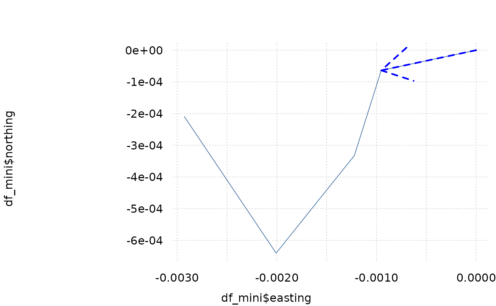

This function adds arrows to the current (tinyplot) plot. Defines a type for tinyplots.
Arguments
- ...
arguments passed to graphics::arrows for example
length,angle,codelength inarrows
Examples
library(trackframe)
library(tinyplot)
df_mini
#> time northing easting id
#> 1 2025-10-14 13:48:46 0.000000e+00 0.0000000000 track_1
#> 2 2025-10-14 13:49:46 -6.375425e-05 -0.0009523287 track_1
#> 3 2025-10-14 13:50:46 -3.326043e-04 -0.0012222081 track_1
#> 4 2025-10-14 13:51:46 -6.402753e-04 -0.0020070494 track_1
#> 5 2025-10-14 13:52:46 -2.096415e-04 -0.0029277994 track_1
tinyplot(x = df_mini$easting, y = df_mini$northing, type = "l")
tinyplot_add(
xmin = df_mini$easting[1],
ymin = df_mini$northing[1],
xmax = df_mini$easting[2],
ymax = df_mini$northing[2],
type = type_arrows(
length = 0.5,
code = 2
),
col = "blue",
lty = 2,
lwd = 2
)
